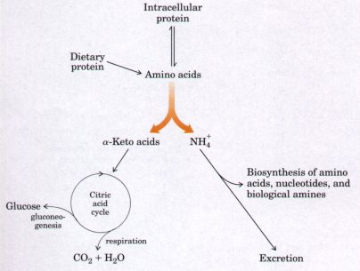
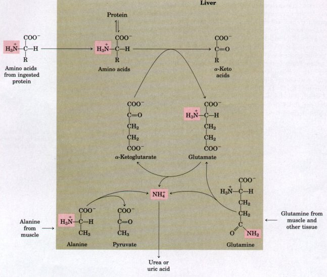
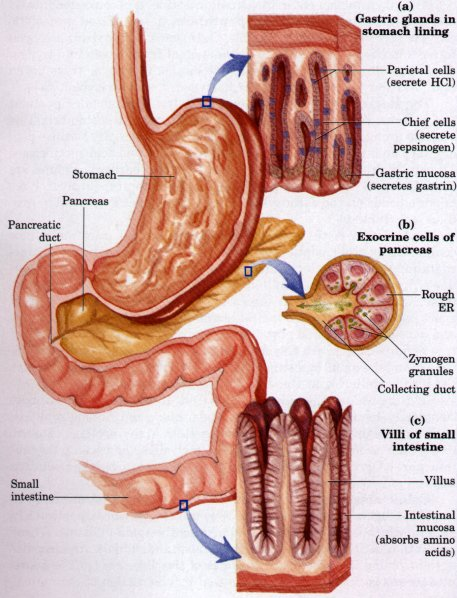

Amino acids, derived largely from protein in the diet or from degradation of intracellular proteins, are the final class of biomolecules whose oxidation makes a significant contribution to the generation of metabolic energy. The fraction of metabolic energy derived from amino acids varies greatly with the type of organism and with the metabolic situation in which an organism finds itself. Carnivores, immediately following a meal, may obtain up to 90% of their energy requirements from amino acid oxidation. Herbivores may obtain only a small fraction of their energy needs from this source. Most microorganisms can scavenge amino acids from their environment if they are available; these can be oxidized as fuel when required by metabolic conditions. Photosynthetic plants, on the other hand, rarely, if ever, oxidize amino acids to provide energy. Instead, they convert CO2 and H2O into the carbohydrate that is used almost exclusively as an energy source. The amounts of amino acids in plant tissues are carefully regulated to just meet the requirements for biosynthesis of proteins, nucleic acids, and a few other molecules needed to support growth. Amino acid catabolism does occur in plants, but it is generally concerned with the production of metabolites for other biosynthetic pathways.
In animals, amino acids can undergo oxidative degradation in three different metabolic circumstances. (1) During the normal synthesis and degradation of cellular proteins (protein turnover; Chapter 26) some of the amino acids released during protein breakdown will undergo oxidative degradation if they are not needed for new protein synthesis. (2) When a diet is rich in protein, and amino acids are ingested in excess of the body's needs for protein synthesis, the surplus may be catabolized; amino acids cannot be stored. (3) During starvation or in diabetes mellitus, when carbohydrates are either unavailable or not properly utilized, body proteins are called upon as fuel. Under these different circumstances, amino acids lose their amino groups, and the a-keto acids so formed may undergo oxidation to CO2 and H2O. In addition, and often equally important, the carbon skeletons of the amino acids provide three- and four-carbon units that can be converted to glucose, which in turn can fuel the functions of the brain, muscle, and other tissues.
Amino acid degradative pathways are quite similar in most organisms. The focus of this chapter is on vertebrates, because amino acid catabolism has received the most attention in these organisms. As is the case for sugar and fatty acid catabolic pathways, the processes of amino acid degradation converge on the central catabolic pathways for carbon metabolism. The carbon skeletons of the amino acids generally find their way to the citric acid cycle, and from there they are either oxidized to produce chemical energy or funneled into gluconeogenesis. In some cases the reaction pathways closely parallel steps in the catabolism of fatty acids (Chapter 16).
However, one major factor distinguishes amino acid degradation from the catabolic processes described to this point: every amino acid contains an amino group. Every degradative pathway therefore passes through a key step in which the a-amino group is separated from the carbon skeleton and shunted into the specialized pathways for amino group metabolism (Fig. 17-1). This biochemical fork in the road is the point around which this chapter is organized. We deal first with amino group metabolism and nitrogen excretion, then with the fate of the carbon skeletons derived from the amino acids.
Nitrogen ranks fourth, behind carbon, hydrogen, and oxygen, in its contribution to the mass of living cells. Atmospheric nitrogen, N2, is abundant but is too inert for use in most biochemical processes. Because only a few microorganisms can convert N2 to biologically useful forms such as NH3, amino groups are used with great economy in biological systems.
An overview of the catabolism of ammonia and amino groups in vertebrates is provided in Figure 17-2 (p. 508). Amino acids derived from dietary proteins are the source of most amino groups. Most of the amino acids are metabolized in the liver. Some of the ammonia that is generated is recycled and used in a variety of biosynthetic processes; the excess is either excreted directly or converted to uric acid or urea for excretion, depending on the organism. Excess ammonia generated in other (extrahepatic) tissues is transported to the liver (in the form of amino groups, as described below) for conversion to the appropriate excreted form. With these reactions we encounter the coenzyme pyridoxal phosphate, the functional form of vitamin B6 and a coenzyme of major importance in nitrogen metabolism. |
 Figure 17-1 Overview of the catabolism of amino acids. The separate paths taken by the carbon skeleton and the amino groups are emphasized by the orange divergent arrow.
|

Figure 17-2 Overview of amino group catabolism in the vertebrate liver (shaded). Excess NH4+ is excreted as urea or uric acid.
The amino acids glutamate and glutamine play especially critical roles in these pathways (Fig. 17-2). Amino groups from amino acids are generally first transferred to α-ketoglutarate in the cytosol of liver cells (hepatocytes) to form glutamate. Glutamate is then transported into the mitochondria; only here is the amino group removed to form NH4+ . Excess ammonia generated in most other tissues is converted to the amide nitrogen of glutamine, then transported to liver mitochondria. In most tissues, one or both of these amino acids are found in elevated concentrations relative to other amino acids.
In muscle, excess amino groups are generally transferred to pyruvate to form alanine. Alanine is another important molecule in the transport of amino groups, conveying them from muscle to the liver.
We begin with a discussion of the breakdown of dietary proteins to amino acids, then turn to a general description of the metabolic fates of amino groups.
In humans, the degradation of ingested proteins into their constituent amino acids occurs in the gastrointestinal tract. Entry of protein into the stomach stimulates the gastric mucosa to secrete the hormone gastrin, which in turn stimulates the secretion of hydrochloric acid by the parietal cells of the gastric glands (Fig. 17-3a) and pepsinogen by the chief cells. The acidity of gastric juice (pH 1.5 to 2.5) acts as an antiseptic and kills most bacteria and other foreign cells. Globular proteins denature at low pH, rendering their internal peptide bonds more accessible to enzymatic hydrolysis. Pepsinogen (Mr 40,000), an inactive precursor or zymogen (p. 235), is converted into active pepsin in the gastric juice by the enzymatic action of pepsin itsel?In this process, 42 amino acid residues are removed from the amino-terminal end of the polypeptide chain. The portion of the molecule that remains intact is enzymatically active pepsin (Mr 33,000). In the stomach, pepsin hydrolyzes ingested proteins at peptide bonds on the amino-terminal side of the aromatic amino acid residues Tyr, Phe, and Trp (see Table 6-7), cleaving long polypeptide chains into a mixture of smaller peptides. |
 Figure 17-3 A portion of the human digestive tract. (a) Gastric glands in the stomach lining. The parietal cells and chief cells secrete their products in response to the hormone gastrin. (b) Exocrine cells of the pancreas. The cytoplasm is completely filled with rough endoplasmic reticulum, on which the ribosomes synthesize the polypeptide chains of the zymogens of many digestive enzymes. The zymogens are concentrated in condensing vesicles, ultimately forming mature zymogen granules. When the cell is stimulated, the plasma membrane fuses with the membrane around the zymogen granules, and the zymogens are released into the lumen of the collecting duct by exocytosis. The collecting ducts ultimately lead to the pancreatic duct and thence to the small intestine. (c) Villi of the small intestine. Amino acids are absorbed through the epithelial cell layer (intestinal mucosa) and enter the capillaries. Recall that the products of lipid hydrolysis in the small intestine enter the lymphatic system following absorption by the intestinal mucosa (Fig. 16-1). |
As the acidic stomach contents pass into the small intestine, the low pH triggers the secretion of the hormone secretin into the blood. Secretin stimulates the pancreas to secrete bicarbonate into the small intestine to neutralize the gastric HCI, increasing the pH abruptly to about pH 7. The digestion of proteins continues in the small intestine. The entry of amino acids into the upper part of the intestine (duodenum) releases the hormone cholecystokinin, which stimulates secretion of several pancreatic enzymes, whose activity optima occur at pH 7 to 8. Three of these, trypsin, chymotrypsin, and carboxypeptidase, are made by the exocrine cells of the pancreas (Fig. 17-3b) as their respective enzymatically inactive zymogens, trypsinogen, chymotrypsinogen, and procarboxypeptidase.
Synthesis of these enzymes as inactive precursors protects the exocrine cells from destructive proteolytic attack. The pancreas protects itself against self digestion in another way-by making a specific inhibitor, itself a protein, called pancreatic trypsin inhibitor (p. 235). Free trypsin can activate not only trypsinogen but also three other digestive zymogens: chymotrypsinogen, procarboxypeptidase, and proelastase; trypsin inhibitor effectively prevents premature production of free proteolytic enzymes within the pancreatic cells.
After trypsinogen enters the small intestine, it is converted into its active form, trypsin, by enteropeptidase, a specialized proteolytic enzyme secreted by intestinal cells. Once some free trypsin has been formed, it also can catalyze the conversion of trypsinogen into trypsin (see Fig. 8-30). Trypsin, as noted above, can convert chymotrypsinogen and procarboxypeptidase into chymotrypsin and carboxypeptidase.
Trypsin and chymotrypsin thus hydrolyze into smaller peptides the peptides resulting from the action of pepsin in the stomach. This stage of protein digestion is accomplished very efficiently because pepsin, trypsin, and chymotrypsin have different amino acid specificities. Trypsin hydrolyzes those peptide bonds whose carbonyl groups are contributed by Lys and Arg residues, and chymotrypsin hydrolyzes peptide bonds on the carboxyl-terminal side of Phe, Tyr, and Trp residues (see Table 6-7).
Degradation of the short peptides in the small intestine is now completed by other peptidases. The first is carboxypeptidase, a zinccontaining enzyme, which removes successive carboxyl-terminal residues from peptides. The small intestine also secretes an aminopeptidase, which can hydrolyze successive amino-terminal residues from short peptides. By the sequential action of these proteolytic enzymes and peptidases, ingested proteins are hydrolyzed to yield a mixture of free amino acids, which can then be transported across the epithelial cells lining the small intestine (Fig. 17-3c). The free amino acids enter the blood capillaries in the villi and are transported to the liver.
In humans, most globular proteins from animal sources are almost completely hydrolyzed into amino acids, but some fibrous proteins, such as keratin, are only partially digested. Many proteins of plant foods, such as cereal grains, are incompletely digested because the protein part of grains of seeds is surrounded by indigestible cellulose husks.
Celiac disease is a condition in which the intestinal enzymes are unable to digest certain water-insoluble proteins of wheat, particularly gliadin, which is injurious to the cells lining the small intestine. Wheat products must therefore be avoided by such individuals. Another disease involving the proteolytic enzymes of the digestive tract is acute pancreatitis. In this condition, caused by obstruction of the normal pathway of secretion of pancreatic juice into the intestine, the zymogens of the proteolytic enzymes are converted into their catalytically active forms prematurely, inside the pancreatic cells. As a result these powerful enzymes attack the pancreatic tissue itself, causing a painful and serious destruction of the organ, which can be fatal.